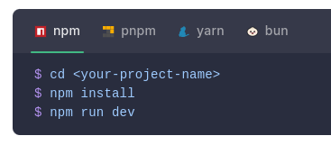

Archivos llamados SFC
Estos archivos agrupan en un solo lugar el HTML, el CSS y el JavaScript de un componente, lo que facilita la organización y el mantenimiento del código.
Trabajo práctico - Madera, Gerbaudo
Vue es un framework de JavaScript para construir interfaces de usuario. Se basa en HTML, CSS y JavaScript estándar y proporciona un modelo de programación declarativo y basado en componentes que permite desarrollar interfaces de cualquier complejidad.
Un framework es una herramienta de desarrollo que proporciona una estructura base para crear aplicaciones. Permite organizar mejor el código y trabajar de forma más rápida y eficiente, ya que incluye funciones y formas de trabajo ya definidas.
Vue es un framework basado en HTML, CSS y JavaScript que se utiliza para crear interfaces de usuario.
Vue permite crear aplicaciones modernas llamadas SPA (Aplicaciones de Página Única), utilizando Vite como herramienta de desarrollo.
Se necesita Node.js y ejecutar:
npm create vue@latest

Vue utiliza Vite y permite trabajar con la Composition API. Es compatible con Visual Studio Code y otras herramientas.
Para producción:
npm run build
Los componentes son partes reutilizables de la interfaz que permiten dividir la aplicación en secciones más pequeñas.
Estos archivos agrupan en un solo lugar el HTML, el CSS y el JavaScript de un componente, lo que facilita la organización y el mantenimiento del código.